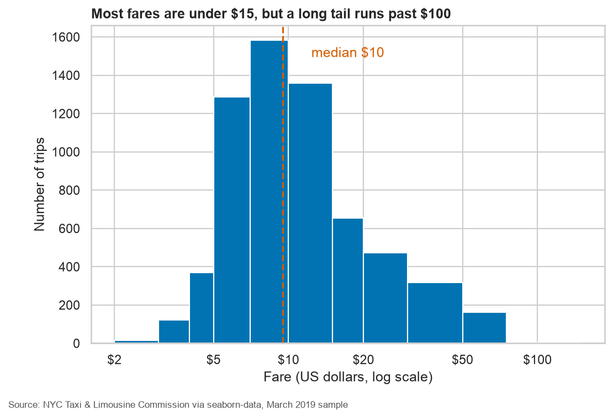
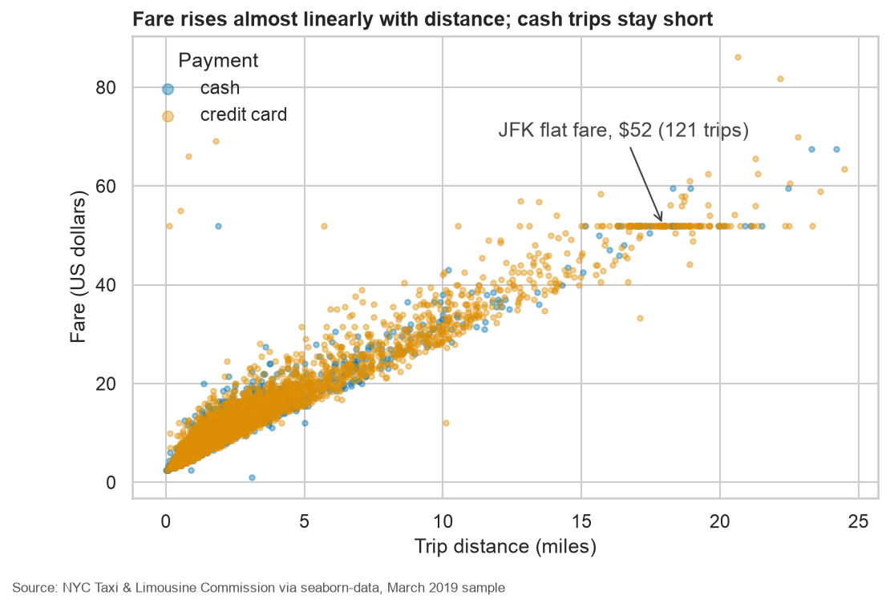
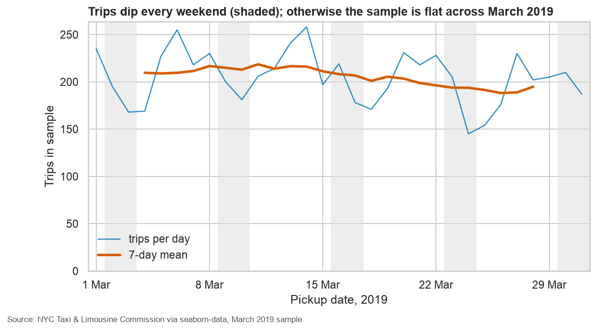
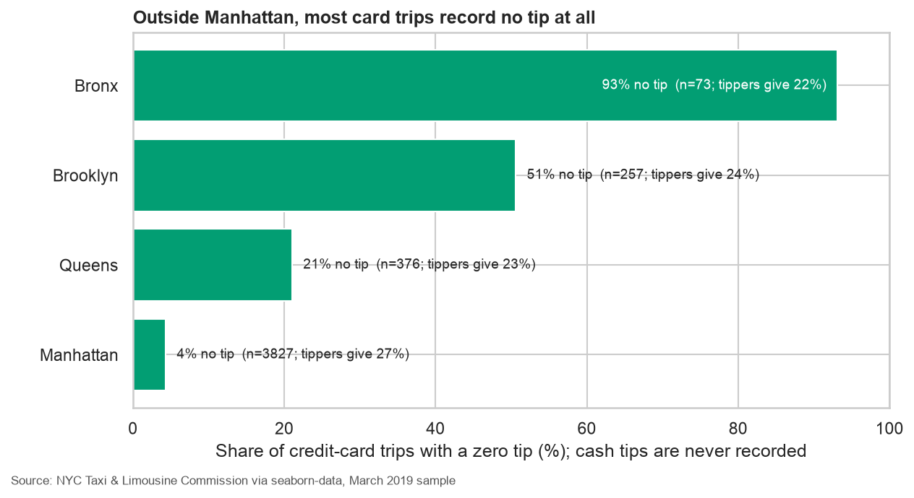
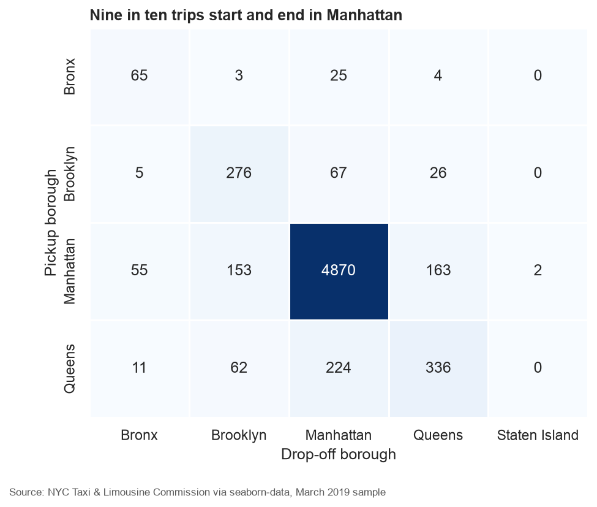

What decides a taxi fare and a tip?
Six thousand New York taxi rides from one month, March 2019. A small dataset, but enough to show what this course asks of a data story: honest charts with active titles, a one-sentence takeaway under each, numbers in context, and a conclusion that takes a side.
Research questions
- How are fares distributed, and how far does the expensive tail reach?
- How closely does distance explain the fare, and does the payment method matter?
- When do people ride, by day of the month and by hour, and where do they tip most?
Findings
1. Most fares are under $15, but a long tail runs past $100

Half of all trips cost $10 or less; the axis is logarithmic because a handful of airport runs and long rides would otherwise flatten the whole chart.
scripts/figures.py.2. Fare rises almost linearly with distance; cash trips stay short

The meter is a straight line: roughly $2.50 plus $2.50 per mile. The flat row at $52 is the JFK airport flat fare. Cash riders cluster below three miles, so any tip analysis must separate the two payment types.
3. Trips dip every weekend; otherwise the sample is flat across March 2019

Saturdays and Sundays (shaded) sit 20 to 30 percent below weekdays. The 7-day mean barely moves, so the sample was drawn evenly across the month; this chart shows a weekly rhythm, not a March trend.
4. Outside Manhattan, most card trips record no tip at all

The question is not how much people tip but whether they tip: 4% of Manhattan card trips show no tip, against 51% in Brooklyn and 93% in the Bronx. Riders who do tip give 22 to 27 percent everywhere, the card reader's default buttons. Sample sizes are printed on the bars so the reader can judge the Bronx figure (73 trips) for what it is.
5. Nine in ten trips start and end in Manhattan

The flow matrix is almost a single cell. Any borough-level comparison outside Manhattan rests on a few hundred trips at most.
Explore: trips by hour and weekday
Hover to read exact counts. The interaction is limited on purpose: one question, one chart.
visuals/ and loads plotly.js from a CDN to stay small.Conclusion
Distance sets the fare and the card reader sets the tip size; what differs between boroughs is whether a tip is recorded at all. If you are a rider, the only lever you control is the trip length; if you are a fleet operator, the weekday evening peak is where the money is. The data do not support stories about generous or stingy neighbourhoods: outside Manhattan the sample is thin and the zero tips may be a recording artefact of green cabs as much as a behaviour.
Limitations and ethics
- This is a 6,433-trip sample of one month, not the full record; absolute counts are not city totals.
- Cash tips are not recorded, so tipping conclusions apply to card payments only.
- Trips longer than 180 minutes and zero-fare rows were removed; see the data card for every cleaning decision.
- The data contain no personal identifiers; zone-level locations are published by the City of New York.
Reproduce
pip install -r requirements.txt
python scripts/download_data.py
python scripts/preprocess.py
python scripts/figures.pyEvery figure above is regenerated by these three scripts from the repository root.